Live Aid 1985
A key performance reference in Queen's live history.
Media Gallery
Explore rare photographs, legendary performances, iconic album artwork, and unforgettable moments from Queen's musical journey.
Curated Collection
Media content is grouped by category so users can scan the archive quickly. CSS Grid is used to arrange cards into rows and columns.
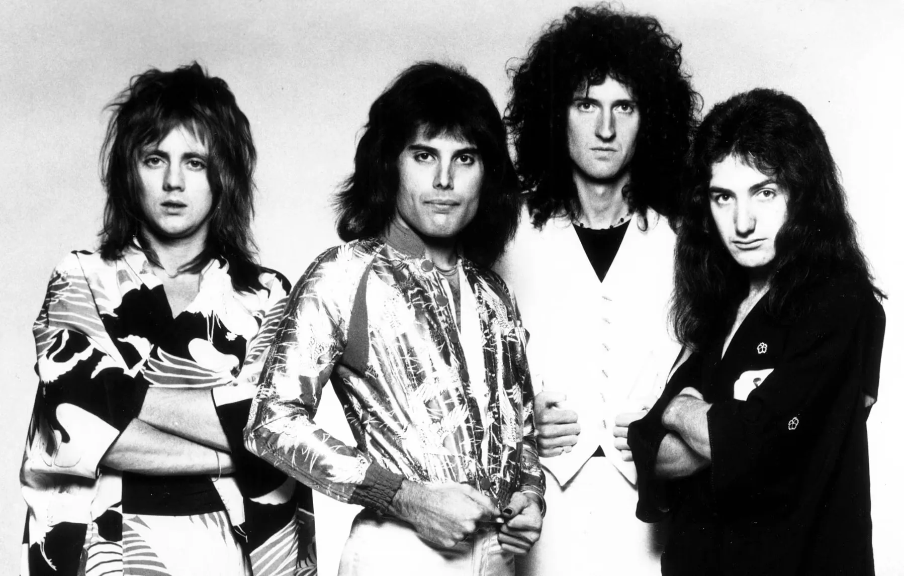
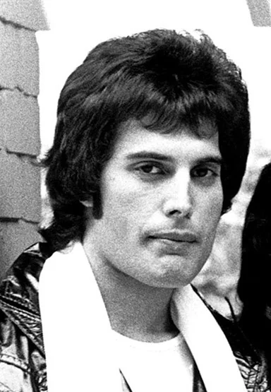
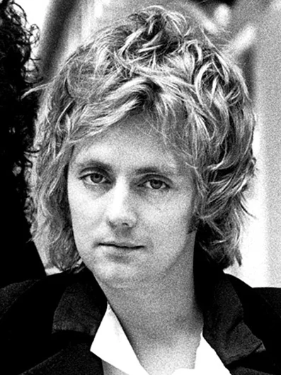
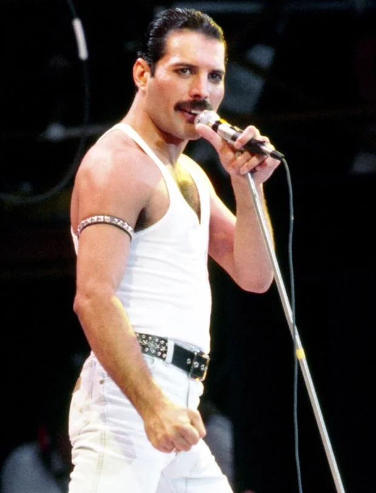
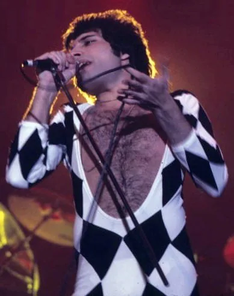
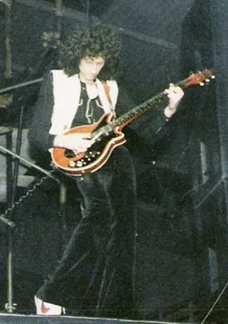


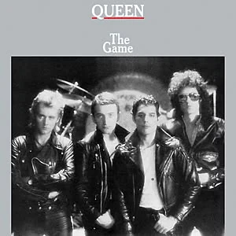
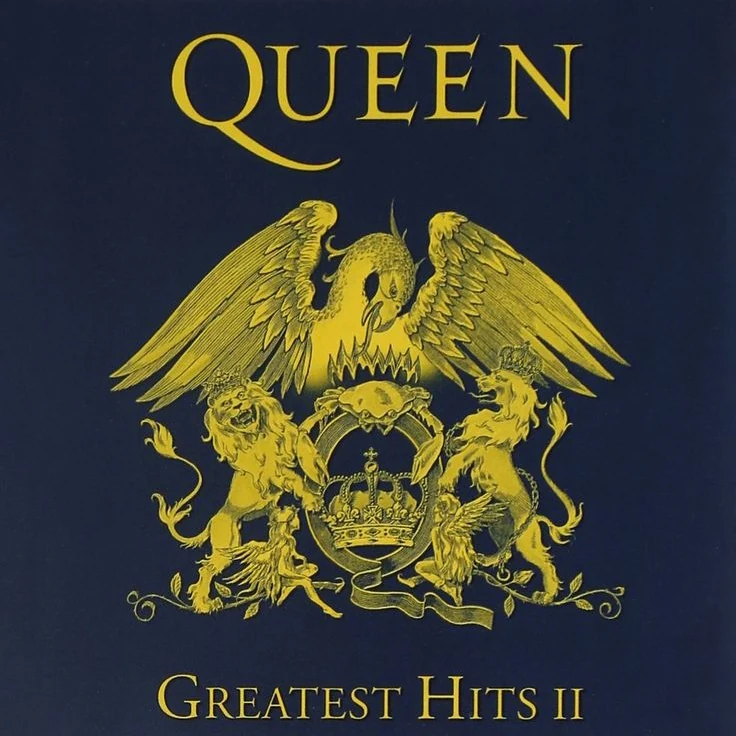
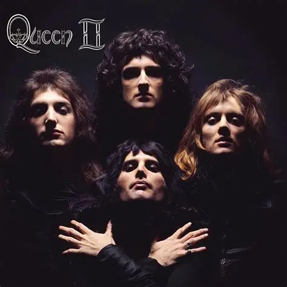
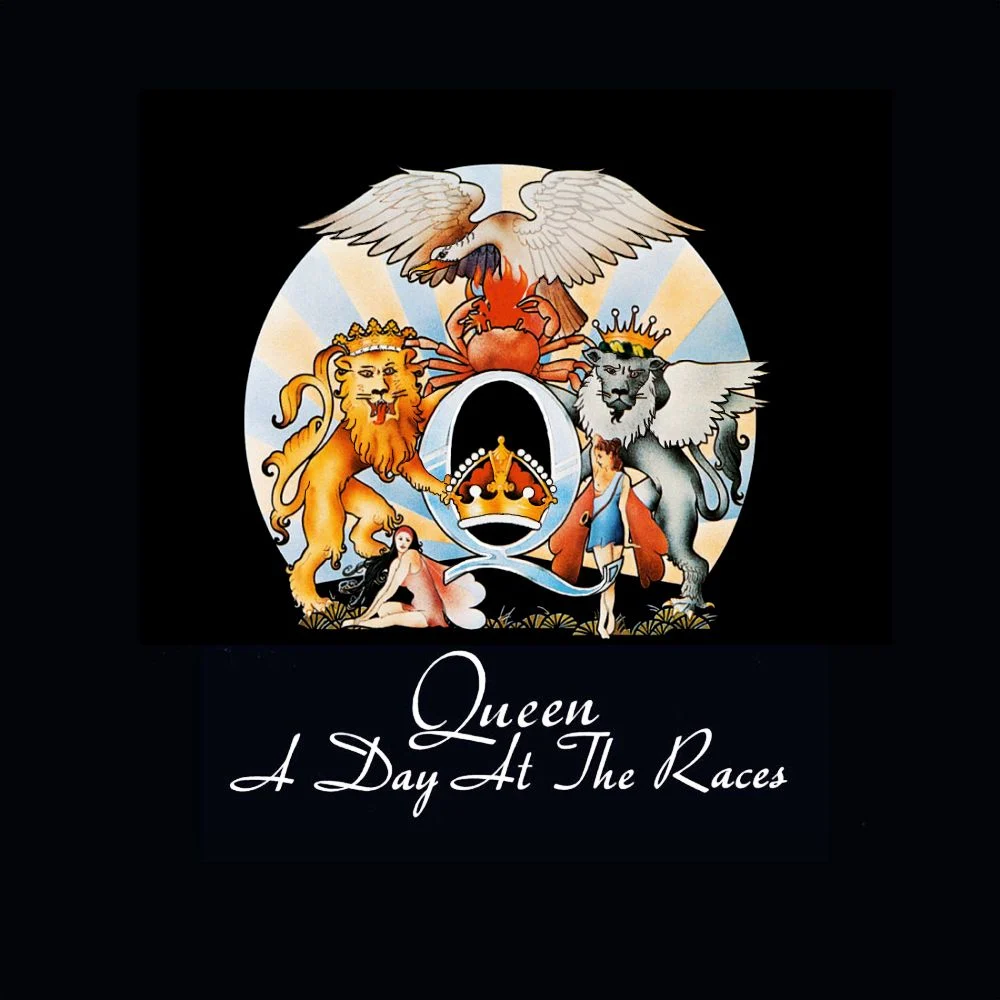
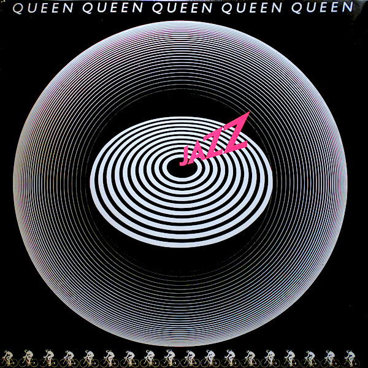
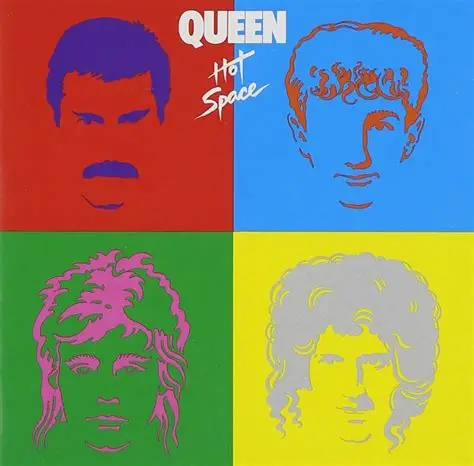
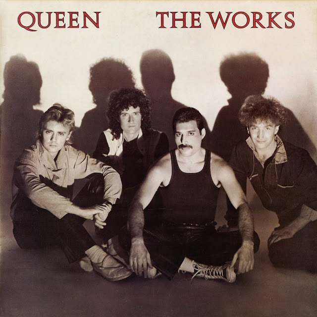
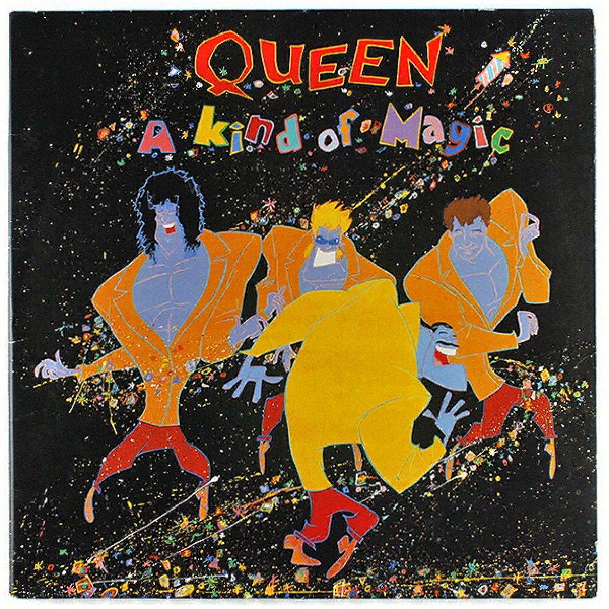
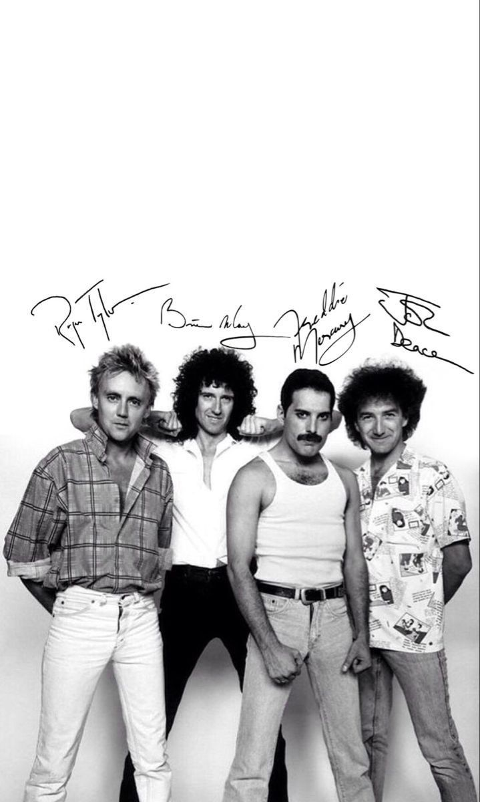
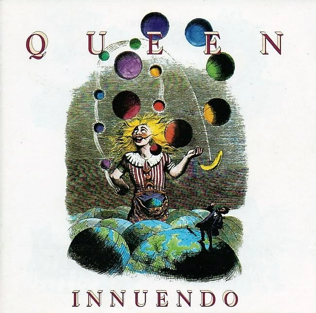
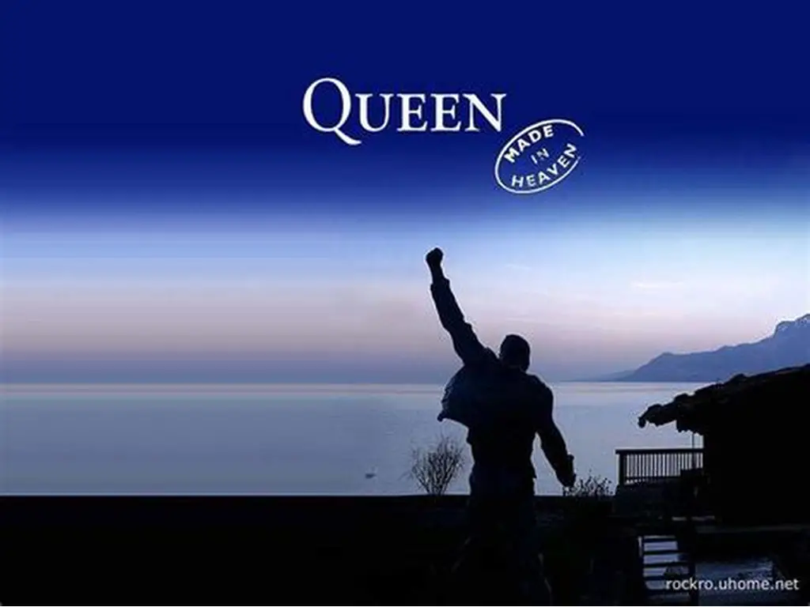
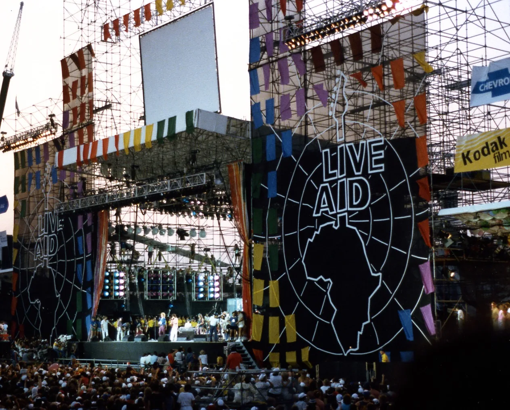
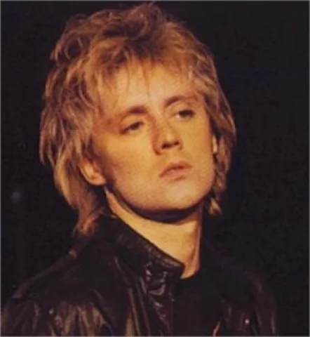
Video Archive
The video cards also use CSS Grid so each card has a consistent structure: preview area, title, description, and link.
A key performance reference in Queen's live history.
Official video reference for Queen's signature song.
High-energy music video reference.